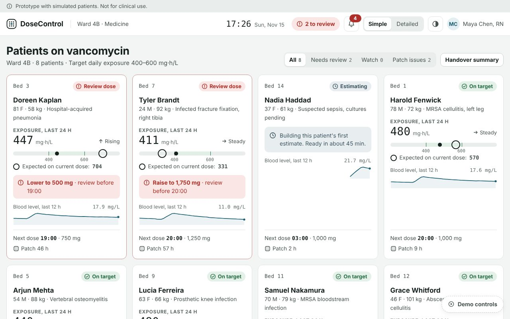

2026
DoseControl
BioInnovate UBC Pitch Competition — Fall 2026Dosing software for vancomycin, the most-used hospital antibiotic. It turns live drug readings from a microneedle skin patch into a recommended next dose, and a clinician approves every change. In a simulation of 2,000 virtual patients whose kidney function changed mid-treatment, patch-guided dosing kept 74% of patients in the target range on days 2–4, against 58% for today's best practice, with no blood draws for drug levels.
The working prototype runs a simulated 8-patient ward in real time, with dose recommendations and plain-language reasons, an approve/decline flow, and forecast charts. It pauses suggestions when the patch signal is weak instead of dosing on bad data.
PythonPharmacokinetic ModellingJavaScriptHTML/CSS